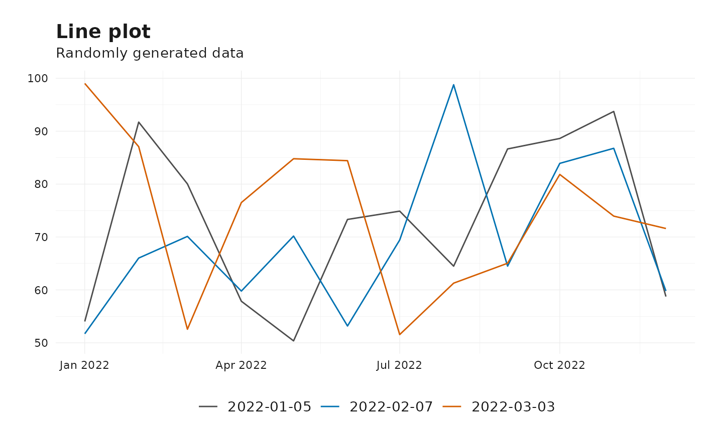
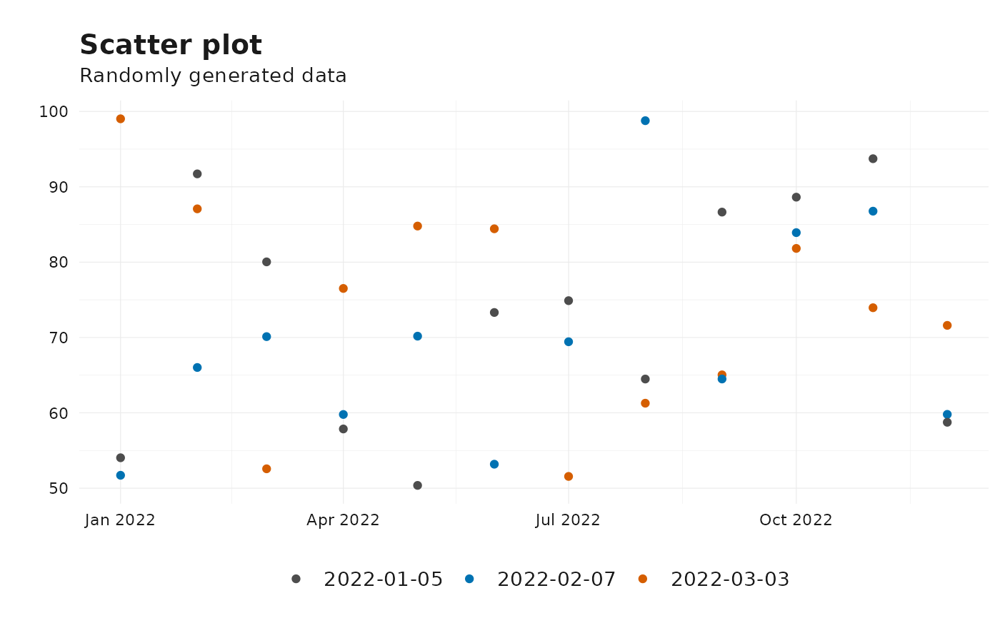
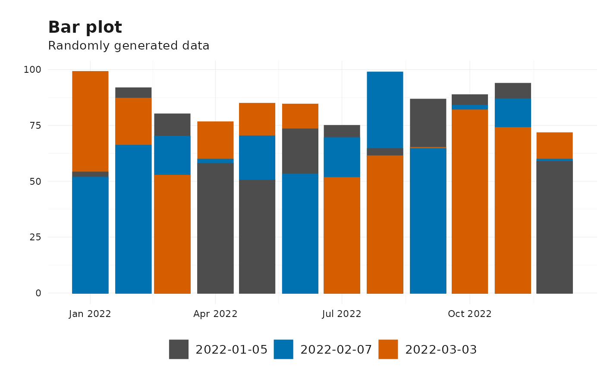
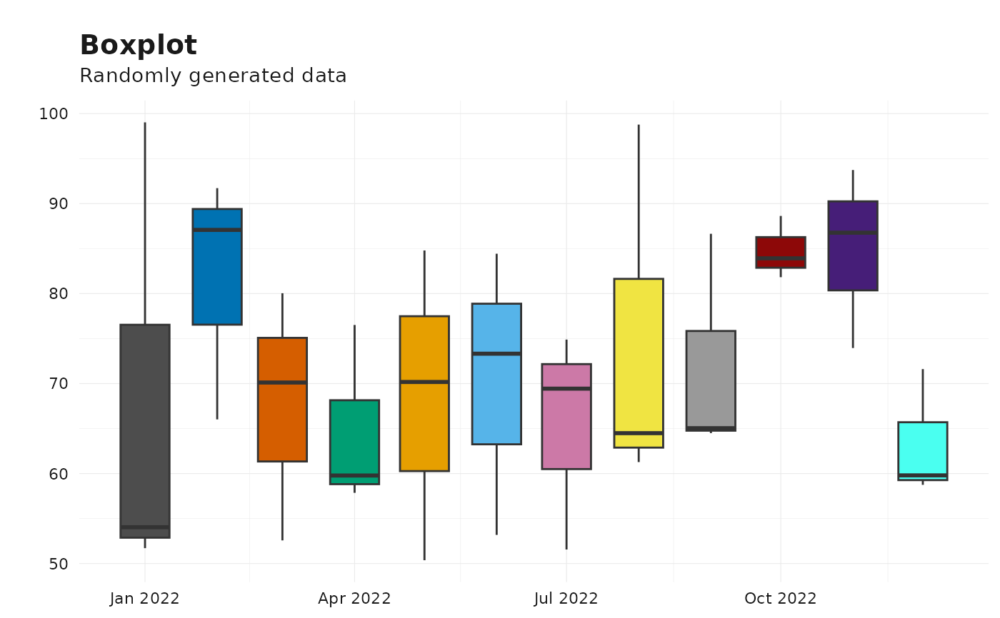

Plot Vintages Data
plot_vintages.RdA flexible function to visualize vintage data using various plot types such as line plots, point plots, bar plots, or boxplots. The function ensures that input data is validated and appropriately transformed before plotting.
Usage
plot_vintages(
df,
type = "line",
dim_col = "pub_date",
title = "",
subtitle = "",
ylab = "",
p = NULL
)Arguments
- df
A data frame containing the vintage data to be plotted. Must include at least two columns: one for time (
time) and one for value (value).- type
A character string specifying the type of plot to create. Options are:
"line": Line plot (default).
"point": Scatter plot.
"bar": Bar plot.
"boxplot": Boxplot.
- dim_col
A character string specifying the column name in
dfthat represents publication dates or other grouping dimensions (e.g."release"). Defaults to"pub_date".- title
A character string specifying the title of the plot. Defaults to an empty string.
- subtitle
A character string specifying the subtitle of the plot. Defaults to an empty string.
- ylab
A character string specifying the label for the y-axis. Defaults to an empty string.
- p
A ggplot2 plot object to which the vintage data will be added. Defaults to
NULL.
Details
The plot_vintages function is designed to handle data frames in both wide and long formats. It ensures
that the provided data frame includes the necessary columns for plotting. If the dim_col column contains
more than 30 unique values, only the most recent 30 are plotted. Additionally, the function supports
custom themes and color scales using scale_color_reviser, scale_fill_reviser, and theme_reviser.
The function raises an error if:
The
typeargument is not one of"line","point","bar", or"boxplot".The specified
dim_colis not a column indf.title,subtitle, orylabare not character strings.
Examples
# Example data
df <- data.frame(
time = rep(seq.Date(from = as.Date("2022-01-01"), by = "month", length.out = 12), 3),
value = runif(36, 50, 100),
pub_date = rep(c("2022-01-05", "2022-02-07", "2022-03-03"), each = 12)
)
# Line plot
plot_vintages(
df,
type = "line",
dim_col = "pub_date",
title = "Line plot",
subtitle = "Randomly generated data"
)

# Point plot
plot_vintages(
df,
type = "point",
dim_col = "pub_date",
title = "Scatter plot",
subtitle = "Randomly generated data"
)

# Bar plot
plot_vintages(
df,
type = "bar",
dim_col = "pub_date",
title = "Bar plot",
subtitle = "Randomly generated data"
)

# Boxplot
plot_vintages(
df,
type = "boxplot",
dim_col = "pub_date",
title = "Boxplot",
subtitle = "Randomly generated data"
)
